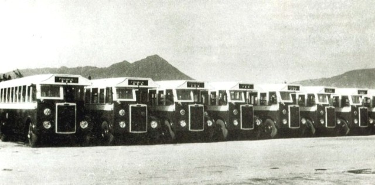
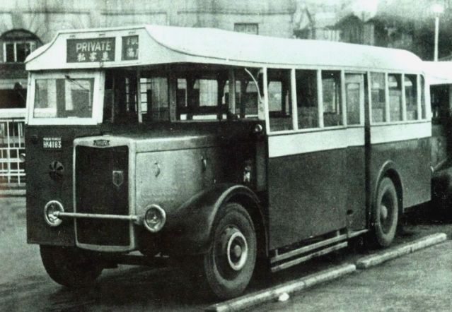
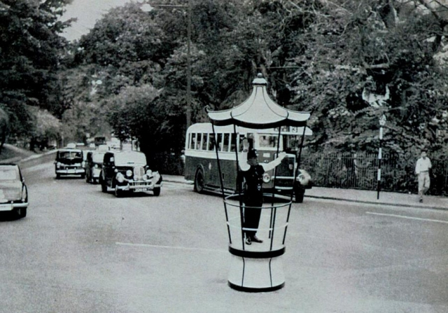
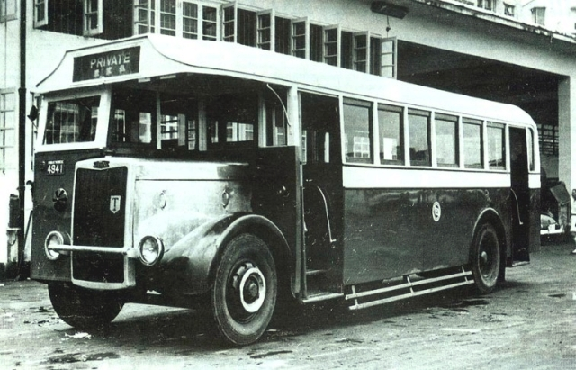
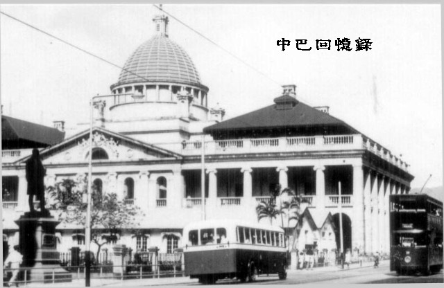
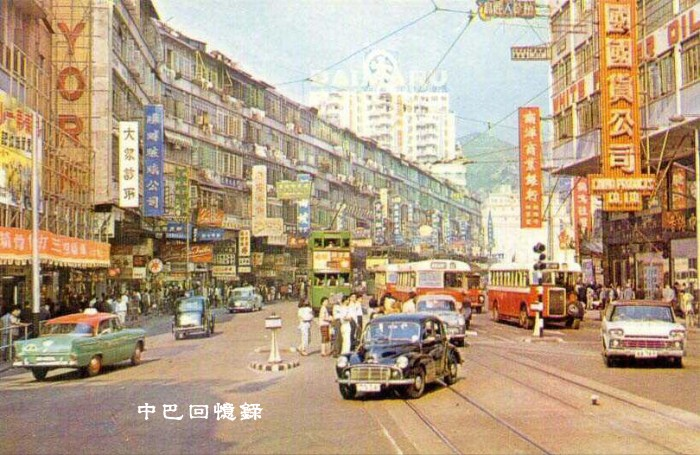
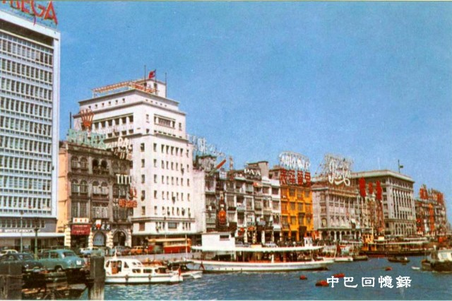
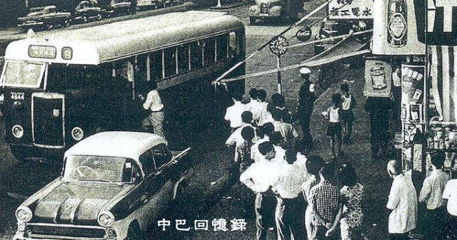
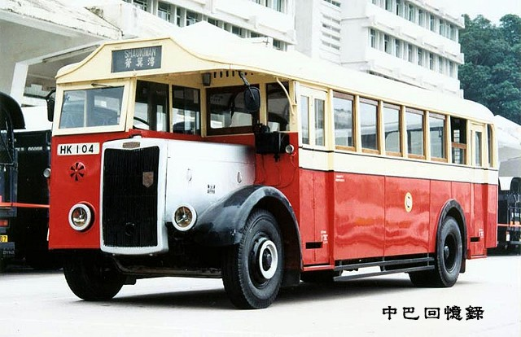

|
|
| 戰後初期，大量新移民由中國南下到香港，導致本港的居住人口不斷上升，尤其以港島區最為明顯。為應付突如其來增加 中巴共訂購了兩款型號，分別是短軸距版本"K5LA4"和長軸距版本"K5LA7"。中巴訂購了56部短軸距版本"K5LA4"，以方便 從這批"Tilling-Stevens"
Express單層巴士開始，中巴在巴士上配置滅火器。滅火器安裝在一個位於前車軸上和引擎蓋則的玻 
剛在港完成裝嵌，仍未出牌的白水箱車隊，一字形排開的整裝待發，投入服務。
所有"Tilling-Stevens"
Express單層巴士都有一個鋁質的引擎蓋，但中巴從未曾為這些引擎蓋髹上顏色，因而令到巴士有「白 |
| 首3輛「白水箱」為"K5LA4"型，率先於1948年2月3日投入服務。中巴特意為山區路線訂購了56台"K5LA4"型底盤，軸距為14呎，全車總長度為25呎。車身設置一道中門，由售票員控制開關。車箱內提供30個座位，座位初時是木板靠背和厚厚的軟坐墊。後來中巴把木板靠背改為硬夾板，使乘坐更感舒適。巴
"K5LA4"型投入服務不久，其中九部於1950年下旬—1951年4月間，在只有兩至三年車齡的情況下進行車身重建工程。首  1952年6月出廠的HK4183，停泊在中環總站，路線牌箱已是各自分開的設計。
 1953年的紅綿道，行走3號線的"K5LA4"正攀上半山區，前往大學堂總站。(圖片來源﹕香港年報1954) |
|
此外，中巴又訂購了52台軸距為17呎3吋的"K5LA7"型底盤，全車總長度為27呎6吋，主力行走市區幹線。巴士設有兩隻車門  剛出廠不久，簇新的白水箱"K5LA7"(4941)，停泊在中巴的北角車廠內，可見這款大型巴士設有兩道車門，以分隔頭等、二等的乘客上落車。(圖片來源﹕Hong Kong Buses V.1)  戰後的中環，簇新的"Tilling-Steven"Express K5LA7與簇新的戰後式雙層電車相遇。(相片來源﹕外購)
其後中巴取消了等級服務，但車上依然安排有兩名售票員，各自負責一半車箱的售票工作和車門開關；同時亦加設了15個企位， 大部份K5LA7型巴士晚年多主力行走柴灣路線，全數一直行走至1967年退役，中巴於該年購入35呎9吋的"Guy"(佳牌) |
|
 約1963年的銅鑼灣波斯富街與記利佐治街交界的軒尼斯道，車水馬龍的景象，可見當時的銅鑼灣與今日百貨公司林立的熱鬧氣氛相去不遠。圖中步入晚年的白水箱與新的「佳牌」Arab相遇。(圖片來源﹕外購)  「白水箱」這個名字何來﹖從這幅圖片可略之一二。圖中正在干諾道奔馳的白水箱，其髹上銀色的引擎蓋，顯而易見。(圖片來源﹕明信片)  圖片攝於60年代，正在灣仔區接載乘客的一台K5LA7型正在行走8號線。從照片中等車的人龍，可見當時單層巴士實在應付不了乘客需求， 中巴亦派出人手在巴士站維持秩序。8號線於1965年改派載客量更高的「長龍」行走。此車於1967年改裝成為訓練巴士。(圖片來源﹕網主珍藏) |
| 大部份「白水箱」於1966--1967年退役。退役後的「白水箱」，中巴把短軸距的"K5LA4"改裝作後勤車輛，而長軸距版本，其中一部售予政府，作為醫療義工服務的訓練巴士，有部份則  唯一一輛被中巴刻意保留下來的白水箱"K5LA7"，於1977年修復完成，從內到外，都是以1949年原裝的面貌示人，包括寶塔式的車頭頂部、一幅過的路線牌箱、木質的窗框及車身、頭等、二等車箱佈局......等等。 |